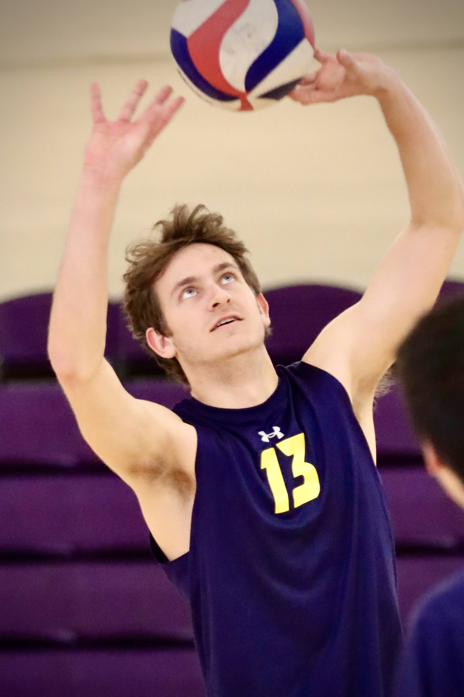

About Me
My name is Granger Pasko! I'm a computer scientist, video game developer, volleyball player, and a passionate environmentalist. I first knew I wanted to become a programmer when I was a kid. I loved video games and always wondered how they worked. I had a deep desire to create my own video games one day so I looked up how to code in Java. I was so intimidated that it took me 7 years to give coding another shot. I tried my hand at the AP Computer Science class at Torrey Pines High School but found myself struggling to keep up. I thought that my coding career had ended there and that I just wasn't built for it. When I was waiting for my college acceptance letters, I was shocked to see that I had been accepted into UCSC's Computer Science program, the only computer science program I had applied for. It took me a while to make my final decision, but I decided to give computer science at Santa Cruz a shot and fell in love with coding and the town. After graduating with a Bachelor of Science in Computer Science from the Baskin School of Engineering, and receiving an honors distinction in my department, I moved back to my hometown of San Diego to begin my professional journey. In the footer of every page, you can click the icons to visit my GitHub, LinkedIn, TryHackMe, and Itch.Io profiles.